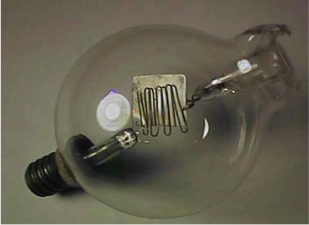
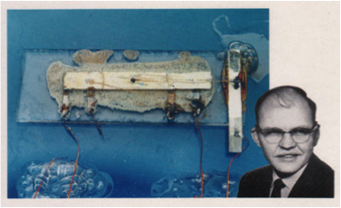

Einleitung#
Wissenschaftliches Rechnen / Datenwissenschaft#
Schaltungssimulation (SPICE)#
Betriebssystem (OS) - Werkzeuge (Tools)#
Code Editoren#
Notepad++ (Windows)
Schreibst Du noch oder TeXst Du schon?#
LaTeX Editoren#
IDE’s
Kollaborative Frameworks
Literaturverwaltung und LaTeX#
Schöne neue Welt#

Halbleiterherstellung (Infineon, Dresden)#
FinFET (Intel)#
TSMC Fab (Next Gen 7/5 nm)#
Es war einmal …#


Damals und heute#


Systemhierarchie#

Nutzen Sie Hierarchien zur Beschreibung komplexer Systeme
Teile und herrsche
Schnittstellen zur Aussenwelt#

Meeting mit einem System#

System in a Package (SiP)#

Sie werden unsere Experten#
Leistungsmerkmale
Hintergrundwissen
Systemverständnis, Architektur, Herstellungsverfahren, Implementation
Unterbewusste Kompetenz
Abgespeicherte Erfahrungen aus Erfolgsgeschichten und Misserfolgen
Spezialwissen
Berufsspezifisches Wissen
Teamwork Haltung
Kommunikationsfähigkeit, Berichtswesen und technische Präsentation
Kreativität
Tool-Kenntnisse
Lernziele des Moduls#
Studierende können nach Abschluss des Moduls:
Elektrische Systeme mathematisch und graphisch im Zeit- und Frequenzbereich beschreiben
Netzwerkanalyse mit RLC-Gliedern
Spezielle Netzwerke, wie Messbrücken, Schwingkreise und ideale Transformatoren, dimensionieren.
Seminaristischer Unterricht:
Komplexe Wechselstromrechnung
Diskrete Bauelemente und ihre Modellierung (RLC)
Methodik der Netzwerkanalyse
Anwendungsbeispiele mit EDA-Werkzeugen und wissenschaftliches Rechnen (Scientific Computing)
Beschreibung elektrotechnischer Systeme#
verschiedene Stufen der Vereinfachung
Felder / Wellen / Optik / HF-Technik
Maxwell-Gleichungen
(1)#\[\begin{align} \oint \mathbf{H} d\mathbf{s} &= \iint \mathbf{J} + \dot{D} d\mathbf{A} \\ \oint \mathbf{E} d\mathbf{s} &= - \iint \dot{B} d\mathbf{A} \end{align}\]
bei lokaler Konzentration der Feldenergie \(\Rightarrow\) quasi-statische Näherung
Mikrowellentechnik / Leitungstechnik
verteilte Schaltungen \(l\), \(c\), \(\rho\)
Kopplung, Laufzeit \(\tau = a/v\)
kleine Systeme mit \(a << \lambda\) bzw. kurze Laufzeiten mit \(\tau << T\)
Regelungstechnik / Impulstechnik
Ersatzschaltungen
(Block-)Schaltbilder
eingeschwungener Zustand
NF-Technik
stationär-periodische Signale
Sinussignale
Energietechnik
monofrequente Signale \(U = Z \cdot I\)
Frequenz \(f \rightarrow 0\)
Gleichstromtechnik
Ohmsches Gesetz \(U = R \cdot I\)
Konzentrierte Schaltelemente#
Stromdichte
Verschiebungsdichte
Flußdichte
Harmonische Signale#
als Zeitfunktion
als Zeiger / komplexe Grösse (Phasor)